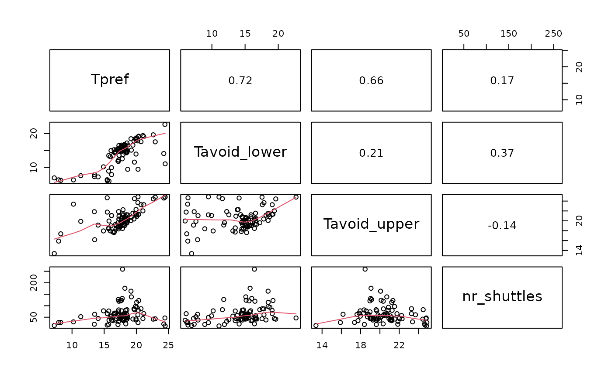

Plot a correlation matrix of selected shuttle-box metrics
Source:R/correlation_matrix.R
correlation_matrix.RdCreates a pairs plot and returns the corresponding correlation matrix. The function can be used with a project-results table containing one row per trial, or with a single time-series trial that is first averaged into time intervals.
Usage
correlation_matrix(
data,
columns,
exclude_start_minutes = 0,
exclude_end_minutes = 0,
interval_minutes = 10
)Arguments
- data
A project-results data frame or an organised single-trial data frame.
- columns
Character vector naming the numeric columns to include.
- exclude_start_minutes
For single-trial data, minutes removed from the start. Ignored for project-results data.
- exclude_end_minutes
For single-trial data, minutes removed from the end. Ignored for project-results data.
- interval_minutes
For single-trial data, interval length used before calculating correlations. Default is 10 minutes.
Examples
example_file <- system.file(
"extdata", "project_database_example.csv", package = "ShuttleboxR"
)
project_data <- read_project_database(example_file)
correlation_matrix(
project_data,
columns = c("Tpref", "Tavoid_lower", "Tavoid_upper", "nr_shuttles")
)
